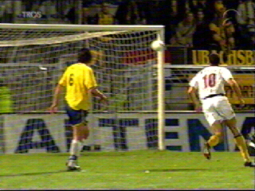
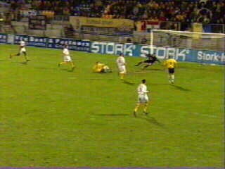
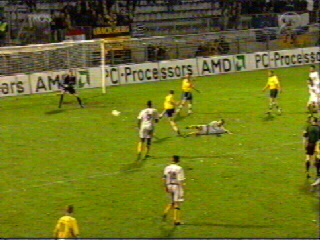
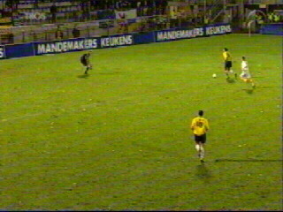

|
RKC - Roda JC 3-0 1 december 2001 |

Roda opende onverwacht offensief. Een knal van
Van Dessel belandt op de paal. Roda speelde in
de uit-shirts van RKC omdat de eigen shirts te
veel op die van de thuisploeg leken.

Nadat Roda vele kansen heeft verprutst valt het
doelpunt aan de andere kant. Fuchs scoort vlak
voor rust 1-0.

Van Wanrooy scoort 2-0 (59e min.).

In de 72e min. kan Govedarica de keeper rustig
uitspelen en 3-0 laten aantekenen.
©KPD